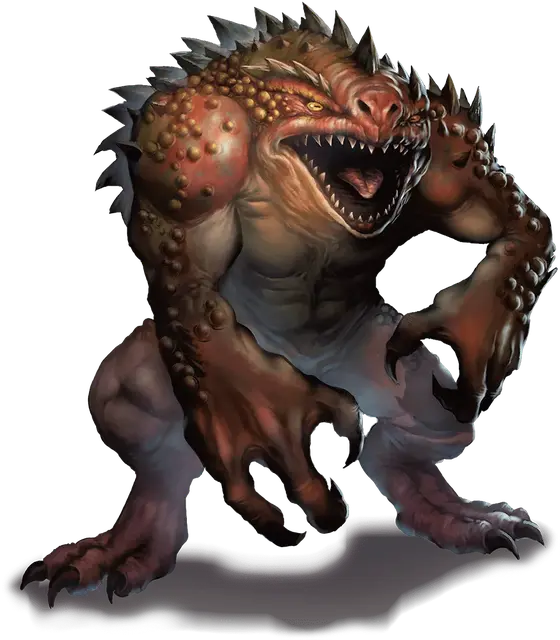

Хезроу
Hezrou
Большое Исчадие (Демон), хаотично-злое

Класс Доспеха 16 (природный доспех)
Хиты 136 (13к10 + 65)
Скорость 30 футов
| мод | спас | ||
|---|---|---|---|
| СИЛ | 19 | +4 | +7 |
| ЛОВ | 17 | +3 | +3 |
| ТЕЛ | 20 | +5 | +8 |
| мод | спас | ||
|---|---|---|---|
| ИНТ | 5 | −3 | −3 |
| МДР | 12 | +1 | +4 |
| ХАР | 13 | +1 | +1 |
Сопротивление урону огонь, холод, электричество; дробящий, колющий, рубящий от немагических атак
Иммунитет к урону яд
Иммунитет к состояниям отравление
Чувства тёмное зрение 120 футов, пассивное Восприятие 11
Языки Бездны, Телепатия 120 фт.
Опасность 8 (3900 опыта)
Бонус мастерства +3
Особенности
Сопротивление магии. Хезроу совершает с преимуществом спасброски от заклинаний и прочих магических эффектов.
Вонь. Все существа, начинающие ход в пределах 10 футов от хезроу, должны преуспеть в спасброске Телосложения Сл 14, иначе становятся отравленными до начала своего следующего хода. При успешном спасброске существо получает иммунитет к вони этого хезроу на 24 часа.
Вариант: Призыв демона. У некоторых демонов может быть действие, позволяющее им призывать других демонов.
Призыв демона (1/день). Демон выбирает, кого призвать, и пытается это сделать. Хезроу получает 30% шанс призыва 2к6 дретчей [dretch] или одного хезроу [hezrou].
Призванный демон появляется в свободном пространстве в пределах 60 футов от призывателя, и действует как его союзник, не имеющий способности призывать демонов. Он призывается на 1 минуту или пока призыватель не умрёт или действием его не отпустит.
Действия
Мультиатака. Хезроу совершает три атаки: одну укусом, и две когтями.
Укус. Рукопашная атака оружием: +7 к попаданию, досягаемость 5 футов, одна цель. Попадание: Колющий урон 15 (2к10 + 4).
Коготь. Рукопашная атака оружием: +7 к попаданию, досягаемость 5 футов, одна цель. Попадание: Рубящий урон 11 (2к6 + 4).
Описание
«НЕ ИСПЫТЫВАЙТЕ ЖАЛОСТИ К ПРОКЛЯТОМУ ПОГАНЦУ. ЭТА ДРЯНЬ МОЖЕТ ВЫРАСТИ, И КОГДА-НИБУДЬ СТАТЬ ДЕМОНИЧЕСКИМ ПОВЕЛИТЕЛЕМ»
— ЭМИРИКОЛ ХАОТИЧНЫЙ
Хезроу — пехота демонических орд Бездны. Они сильные, но глупые, их часто заставляют жертвовать собой более мощные демоны. Они нападают в скопление вражеских сил, и от их зловония тошнит даже самых стойких противников.
См. дополнительно статью: "Бестиарий: Демоны"